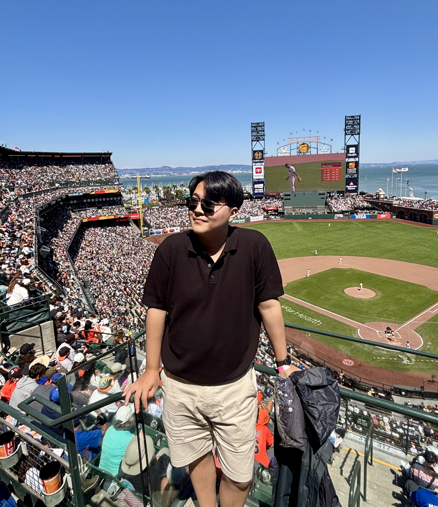
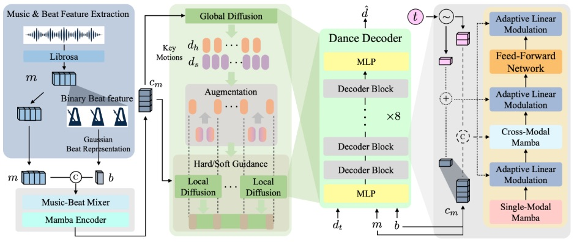

|
Donghyeon Soon I am a B.S. student in Computer & Electronics Engineering at DGIST, South Korea. My research interests lie in computer vision, generative AI, 3D vision, and robotics. I work on problems related to 3D/4D reconstruction, generative modeling, Gaussian Splatting, diffusion models, and parametric human/animal modeling. |
 |
{kind=link}
ResearchMy research focuses on developing models for reconstructing, animating, and generating dynamic 3D and 4D content, especially for animals and humans. My work combines synthetic data pipelines, parametric animal and human models, and generative methods to turn 2D images and videos into animatable 3D/4D representations. I enjoy building tools and models that expand the creative and scientific possibilities of computer vision and graphics. |

|
WildAni4D: Towards 4D Animal Mesh Reconstruction Gyeongsu Cho, Hezhen Hu, Donghyeon Soon, Changwoo Kang, Kyungdon Joo CVPR 2026 (Findings) [paper] / [project page] We present a synthetic animal video pipeline and a video transformer model for reconstructing temporally coherent 4D animal motion and global trajectories from monocular in-the-wild videos. |
|
 |
Not Like Transformers: Drop the Beat Representation for Dance Generation with Mamba-Based Diffusion Model Sangjune Park, Inhyeok Choi, Donghyeon Soon, Youngwoo Jeon, Kyungdon Joo WACV 2026 Also presented at ICCVW 2025 Workshop on Generative Models for Audio-Visual Creation (Gen4AVC) [paper] / [project page] We propose a Mamba-based diffusion framework for music-driven dance generation with a redesigned beat representation for better motion modeling and rhythm alignment. |

|
DogRecon: Canine Prior-Guided Animatable 3D Gaussian Dog Reconstruction From a Single Image Gyeongsu Cho, Changwoo Kang, Donghyeon Soon, Kyungdon Joo International Journal of Computer Vision (IJCV), 2025 Also presented at CVPR 2024 Workshop on Computer Vision for Animals (CV4Animals) [paper] / [project page] DogRecon reconstructs an animatable 3D Gaussian dog from a single RGB image by incorporating canine priors and robust geometry-aware optimization. |
Education
|
ExperienceMy experience spans academic research labs and applied projects in 3D vision, generative AI, and motion understanding. I enjoy building end-to-end systems, from developing research pipelines and core modules to presenting results clearly and turning ideas into practical tools. I also collaborate with Hezhen Hu at UT Austin on human avatar modeling.
If you'd like to discuss potential collaborations or have any questions, please feel free to contact me at dhsoon@dgist.ac.kr. |
|
Template from this website. |